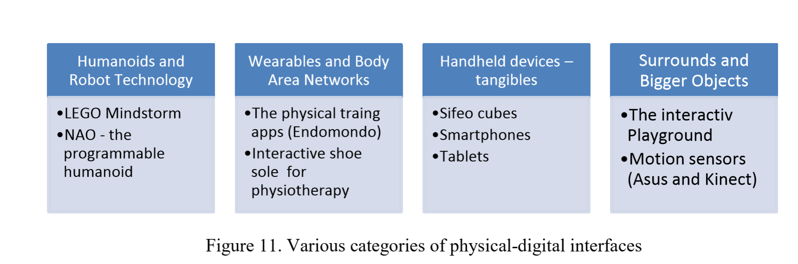

"Etnography in the Kindergarten"
Formål
-
At undersøge effektiviteten af etnografiske teknikker til at levere kontekstuelle oplysninger fra et legende miljø
-
For at få et indblik i arten af børns adfærd inden for et børnehavemiljø: interpersonelle forhold, interaktioner i miljøet og variationer for engagement i børnehavens ressourcer
Etnography
Ethnographic studies involve a process of building an understanding of work or activity as it occurs, in situ
Embodied Interaction & Tangible User Interface
